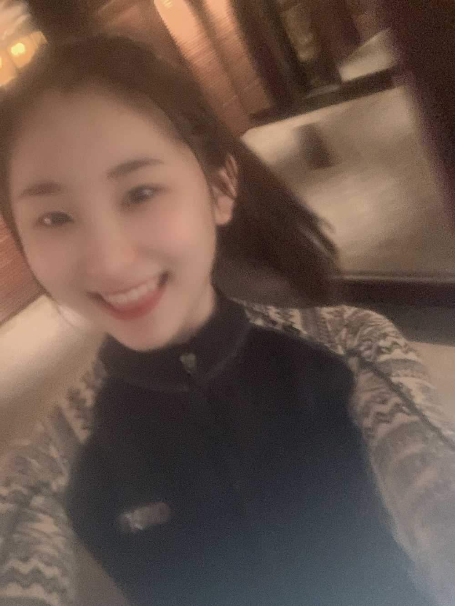
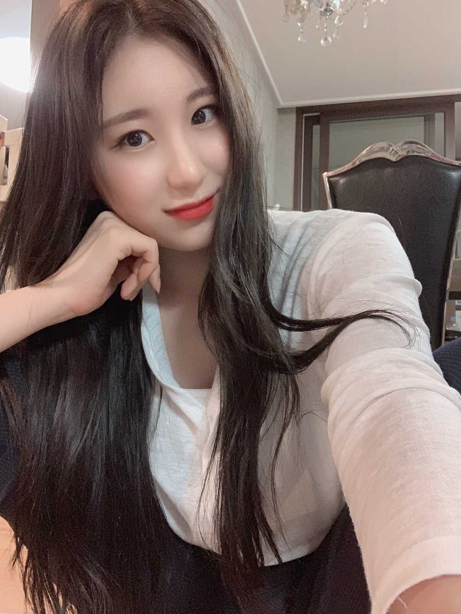

가끔 이럴 때 있잖아요 ㅎㅎ
아무 이유없이
속으로 굉장히 신나는 날ㅋㅋㅋㅋㅋㅋ
포인트는 겉으로 티내지는 않는 것
뭘까 이 느낌
신나면 신나는 대로 꿀꿀하면 꿀꿀한대로
사는 게 전 거 같아요!
슬플 때는 슬픔의 끝을 보고
기쁠 때는 미친듯이 기뻐하구 ㅎㅎ
저랑 비슷한 분들 계실걸용?
더 이야기 해볼까요?
저는 사실 계획한 대로 흘러가지 않으면 스스로 화가 나는?
스트레스를 받는 사람인데 앞으로는..
계획을 조금 더 크게 !
짜려구요.. 세세하게 안짤 거예요 .
어짜피 인생은 마음대로 흘러가지는 않거든요 ㅎㅎ
요즘 주변에 좋은 사람들이 많이 생기고 있어요~~
물론 가장 좋은 사람은 우리 이호이지만 ㅎㅎ
덕분에 영향도 많이 받고
제 스스로 성장할 수 있게 만들어주시는 거 같아요.
저의 성장은 오로지
저만이 할 수 있게 만드는 건 아닌 거 같아요!!
그래서 느낀 거:)
저도 남에게 좋은 영향을 주는 사람이 (먼저)되자!!!
이호♥️굿나잇 🌙
